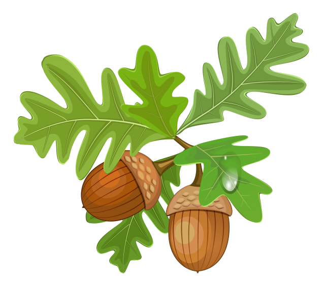

Ever wonder what squirrels do when they’re not scurrying through yards and scampering up trees? Nancy Rose offered some creative insight in The Secret Life of Squirrels, which spotlights squirrel visitors to her backyard deck in Bedford, Nova Scotia. Published by Little, Brown/Tingley in 2014, the picture book features photographs of red squirrels in miniature sets Rose creates using cardboard, clay, craft supplies, and dollar store finds. Rose then snapped her rodent pals celebrating the holidays for 2015’s Merry Christmas, Squirrels!, and now captures them courting in The Secret Life of Squirrels: A Love Story, due out this month.
Photographer Rose’s photographs of squirrels interacting with miniature props of her own making earned her a following on the photo website Flickr. Now, she crafts a picture-book narrative around several such photos, introducing Mr. Peanuts, a “rather unusual squirrel” who is seen tending to a miniature gas grill, playing a tiny piano (“His favorite piece is Moonlight Sonata. Most squirrels would find that piece quite difficult to play”), reading, and tidying up before the arrival of Cousin Squirrel. Images of twigs frame several photos, which show Mr. Peanuts and his cousin “playing” chess, dining at a picnic table (with a cocktail umbrella for shade), and enjoying a cake topped with acorns. “[Squirrels] will inspect and explore anything if peanuts are involved,” Rose says in a q&a at book’s end, explaining how she has created a photo studio for her miniature scenes off her house’s deck. The storyline is little more than a vehicle to showcase Rose’s photos, but those images should pique the interest of casual readers and prospective photographers, who can try the wildlife photography tips she offers. Ages 3–6.